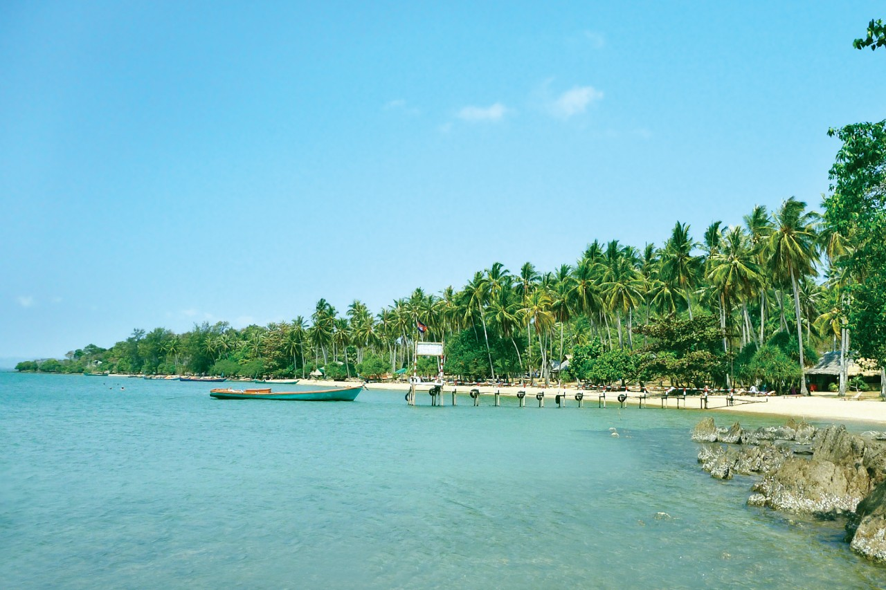

This is a relaxing southwestern seaside province situated 168 Km away from Phnom Penh. Besides the beaches, Kep is best known for having the best pepper, salt and seafood, especially crabs.

Several islands, including the popular Rabbit Island (Koh Thonsáy), lay
just a short boat ride off its coast. This coastal province is one of the
‘must visits’ when in Cambodia. Crabs fried with pepper - a local
specialty dish.
Freshly caught crabs are sorted according to size and usually sold even
before they are brought to shore.